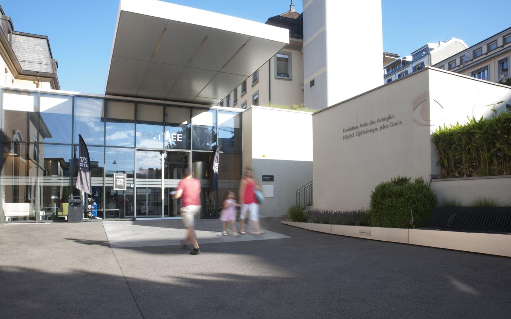
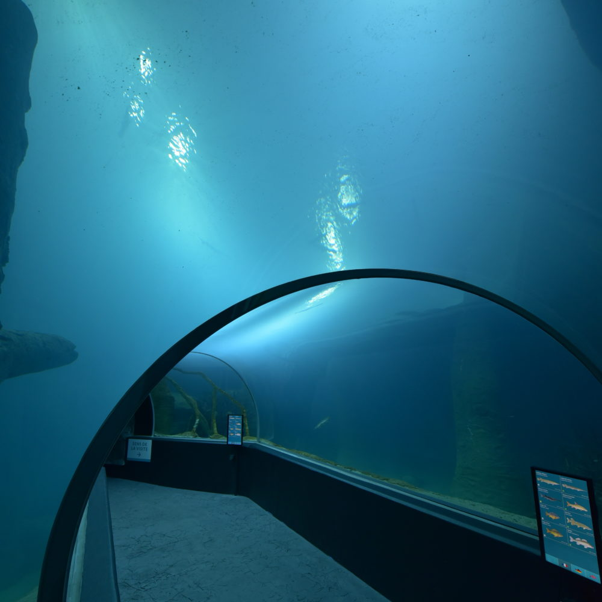
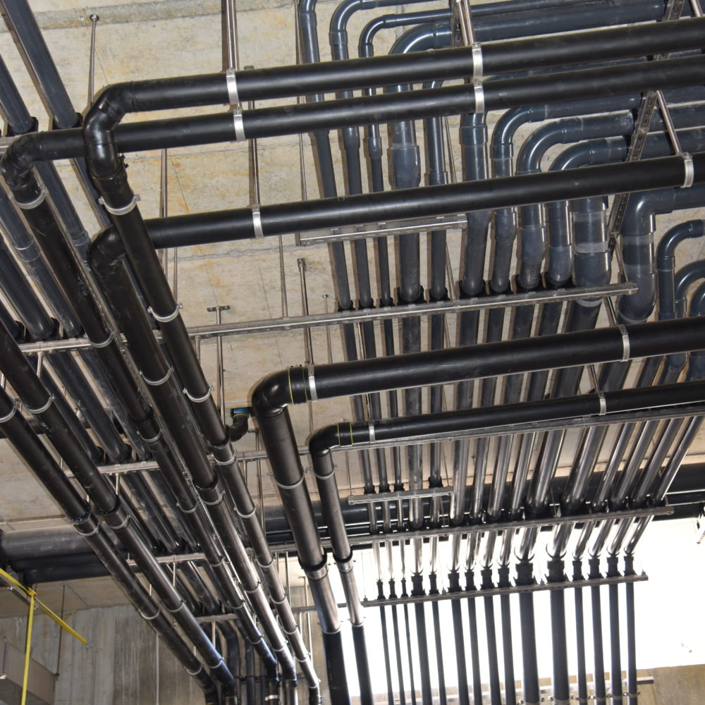
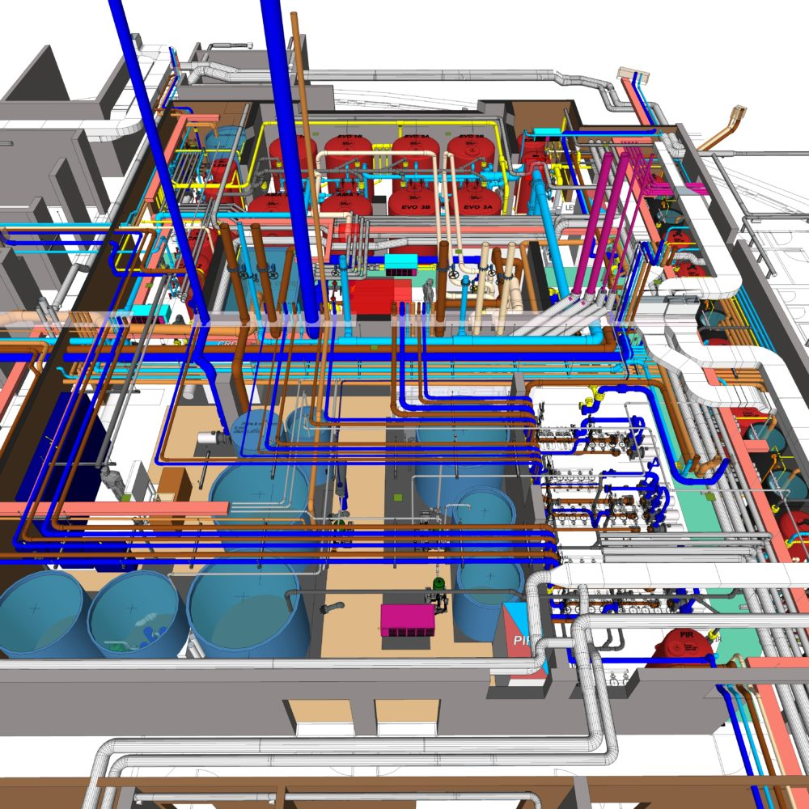

Santé
Extension du bloc opératoire — CHUV, Lausanne
Janvier 2026 — Démarrage des études d'exécution pour la modernisation de 18 salles chirurgicales.
Lire la suiteSuivez les dernières nouvelles et chantiers du bureau.
Janvier 2026 — Démarrage des études d'exécution pour la modernisation de 18 salles chirurgicales.
Lire la suite
Décembre 2025 — Mise en service du nouveau traitement biologique pour les bassins tropicaux.
Lire la suite
Novembre 2025 — Réception des travaux d'assainissement du bassin olympique et de la fosse plongeoir.
Lire la suite
Planification complète des réseaux de fluides médicaux pour les nouvelles salles d'opération.

Conception et suivi des installations hydrauliques et de traitement d'eau pour la nouvelle serre.

Études et planification du renouvellement du réseau principal de distribution pour 3 200 habitants.

Conception et réalisation d'une fontaine décorative extérieure avec système de filtration intégré.